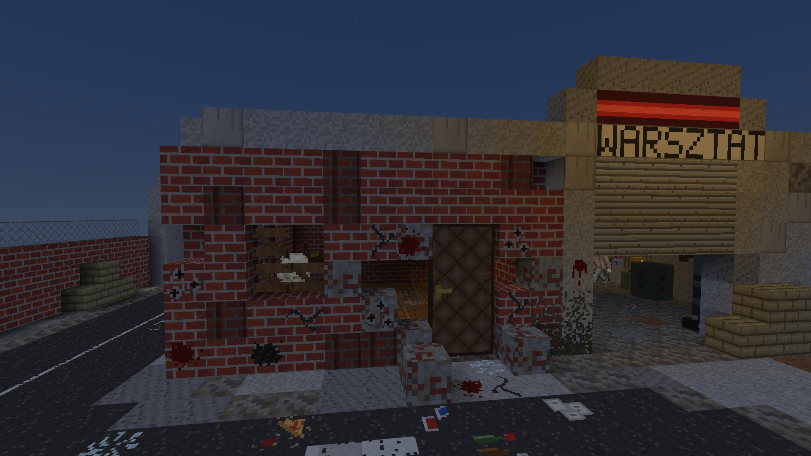

One more war nobody asked for
Maro is 45 — ex-military, ex-mercenary, spent the PRL years hunting communists in the shadows. Capitalism was supposed to be the hard part: kiosks, bazaars, everyone hustling to stay afloat. Then the dead started shuffling up the main street, and the town emptied in a week.
One crossing with a faded STOP on the asphalt, a wrecked kiosk, a warsztat with its shutter rolled down and something moving behind it, brick houses, and a little park behind a chain-link fence. That's the whole world now — and it's full of them.
Talk to the survivors who stayed — starting with Babcia, who isn't leaving without her favorite teapot. Take on their quests, quiet the yard, cull the horde. And when the streetlights fail at dusk — hold on until morning.
